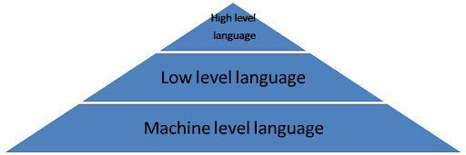

Types of programming language
1. Machine language
2. Assembly language
3. High level language
Machine language: The computer can understand only machine language which uses 0’s and 1’s. In machine language the different instructions are formed by taking different combinations of 0’s and 1’s.
Advantages:
Translation free: Machine language is the only language which the computer understands. For executing any program written in any programming language, the conversion to machine language is necessary. The program written in machine language can be executed directly on computer. In this case any conversion process is not required.
High speed :The machine language program is translation free. Since the conversion time is saved, the execution of machine language program is extremely fast.
Disadvantage:
It is hard to find errors in a program written in the machine language.
Writhing program in machine language is a time consuming process.
Machine dependent: According to architecture used, the computer differs from each other. So machine language differs from computer to computer. So a program developed for a particular type of computer may not run on other type of computer.
Assembly language:
To overcome the issues in programming language and make the programming process easier, an assembly language is developed which is logically equivalent to machine language but it is easier for people to read, write and understand.
Assembly language: is symbolic representation of machine language. Assembly languages are symbolic programming language that uses symbolic notation to represent machine language instructions. They are called low level language because they are so closely related to the machines.
Assembler
Assembler is the program which translates assembly language instruction in to a machine language.
Easy to understand and use.
It is easy to locate and correct errors.
Disadvantage :
Machine dependent
The assembly language program which can be executed on the machine depends on the architecture of that computer.
Hard to learn It is machine dependent, so the programmer should have the hardware knowledge to create applications using assembly language.
Less efficient
Execution time of assembly language program is more than machine language program.
Because assembler is needed to convert from assembly language to machine language.
High level language
High level language contains English words and symbols. The specified rules are to be followed while writing program in high level language. The interpreter or compilers are used for converting these programs in to machine readable form.
Translating high level language to machine language
The programs that translate high level language in to machine language are called interpreter or compiler.
Compiler:
A compiler is a program which translates the source code written in a high level language in to object code which is in machine language program.
Compiler reads the whole program written in high level language and translates it to machine language. If any error is found it display error message on the screen.
Interpreter
Interpreter translates the high level language program in line by line manner.
The interpreter translates a high level language statement in a source program to a machine code and executes it immediately before translating the next statement. When an error is found the execution of the program is halted and error message is displayed on the screen.
Advantages
Readability : High level language is closer to natural language so they are easier to learn and understand
Machine independent : High level language program have the advantage of being portable between machines.
Easy debugging : Easy to find and correct error in high level language
Disadvantages
Less efficient The translation process increases the execution time of the program. Programs in high level language require more memory and take more execution time to execute.